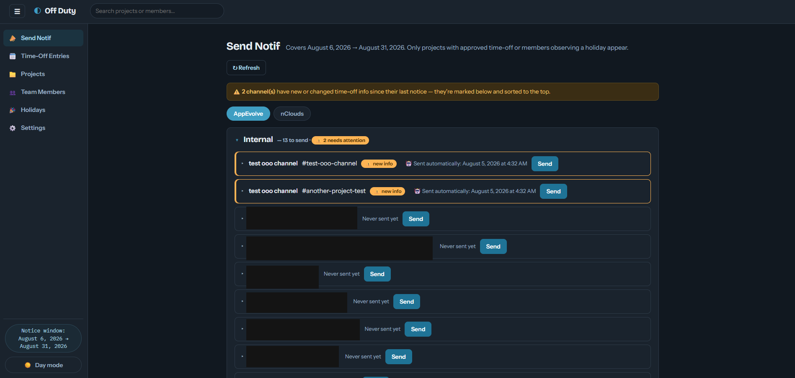
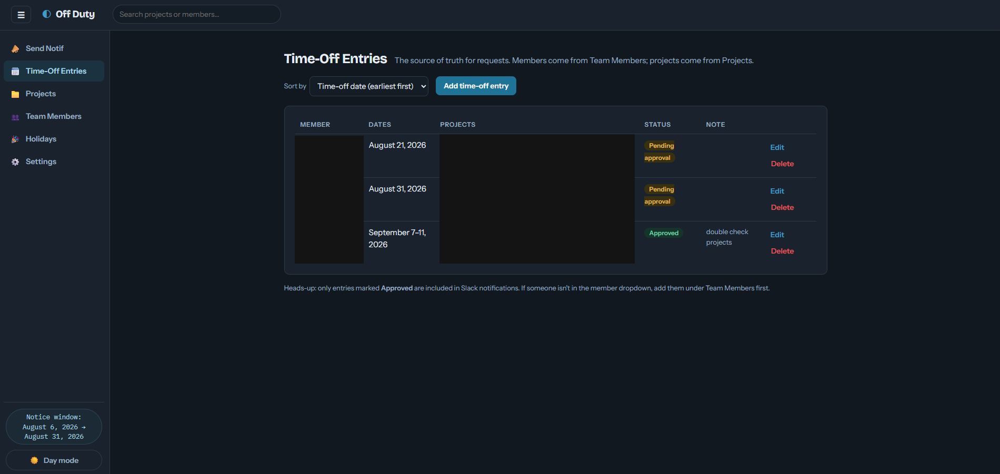
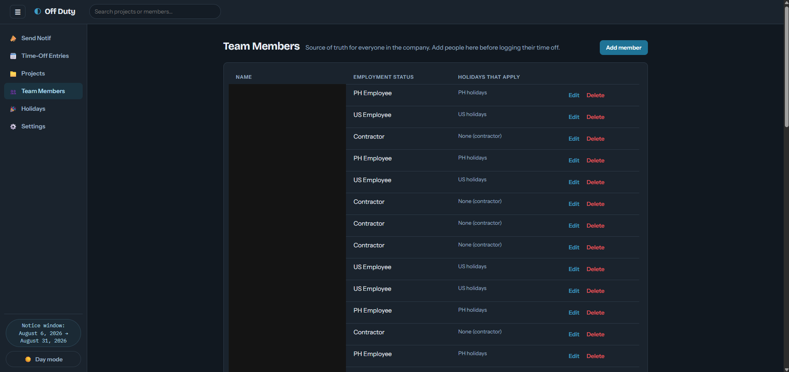
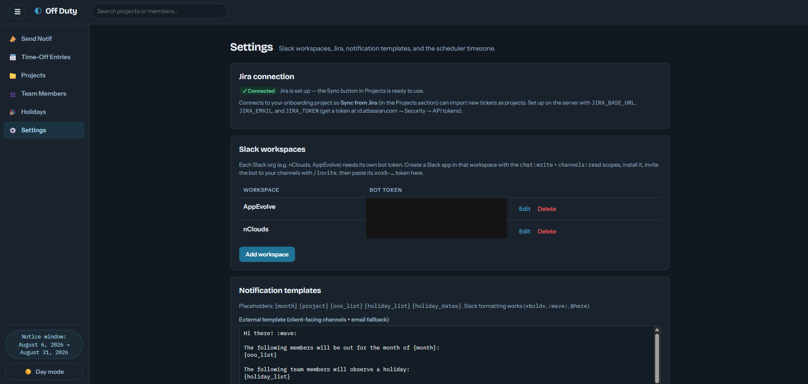
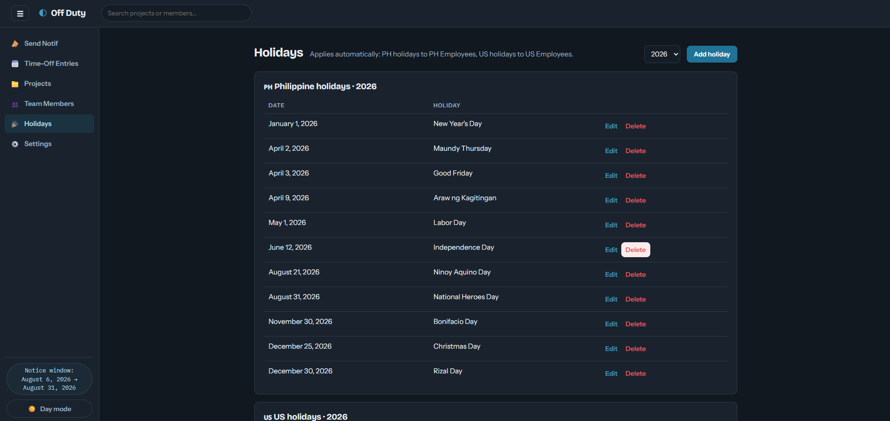

Personal Projects
Built with AI-assisted development — same instinct for solving a real workflow problem, just pointed at my own tools instead of a client's.
Off Duty
Time-off tracking and automated Slack notifications, built for the team
Built to fix a real gap in how time-off requests were tracked at work. Team members, projects, and approved time off all live in one place, and a scheduler automatically drafts and sends Slack notifications to every affected project channel — flagging which ones have new info since their last notice, so nothing gets missed.





BudgetFlow PH
Personal finance tracker built for day-to-day money management
Started as a simple local budgeting tool and grew into a full web app — bank account tracking, budget planning, cash flow views, and a notes editor for keeping context next to the numbers. Rebuilt from local storage into a proper synced backend so it works the same across devices.